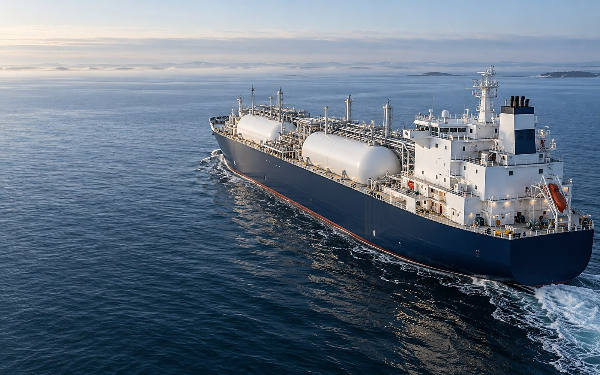
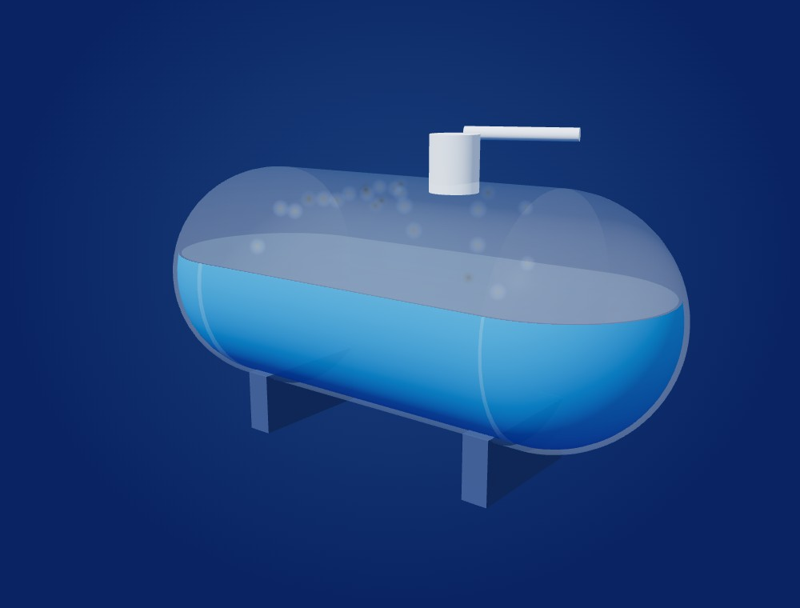
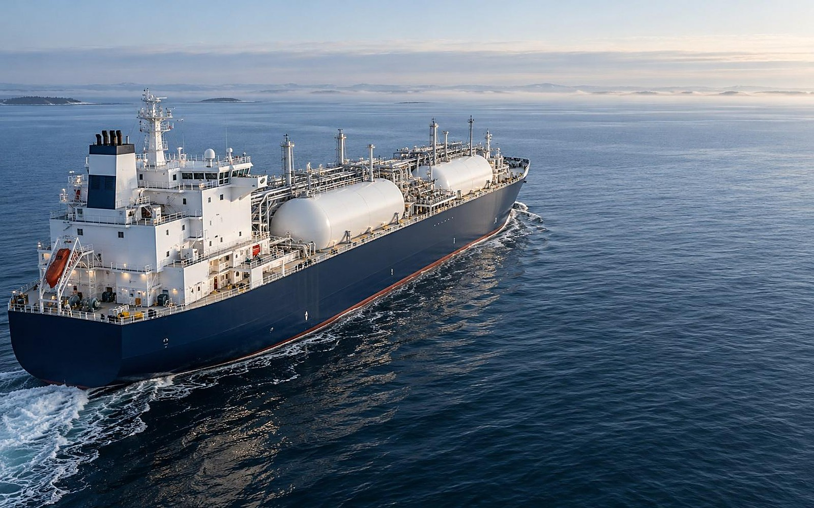
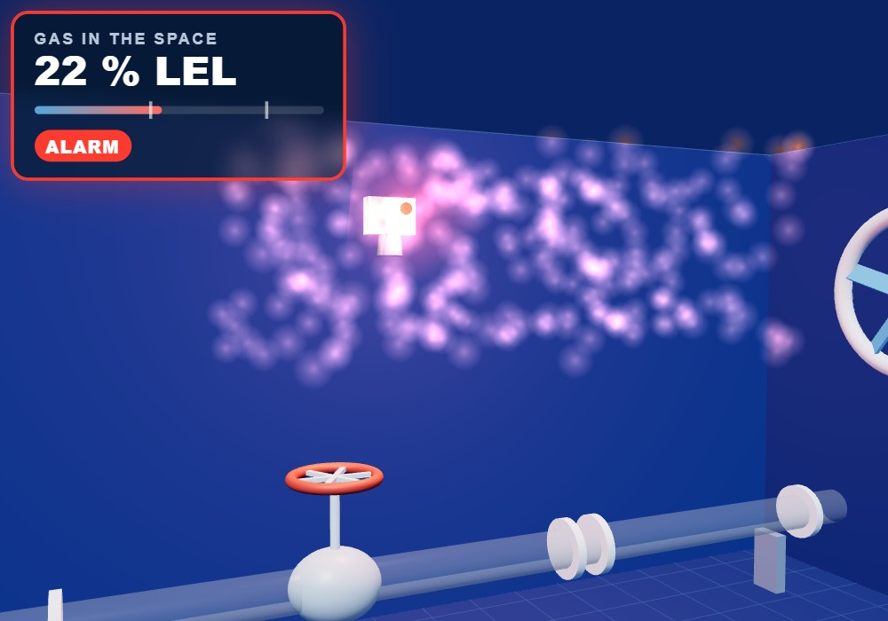
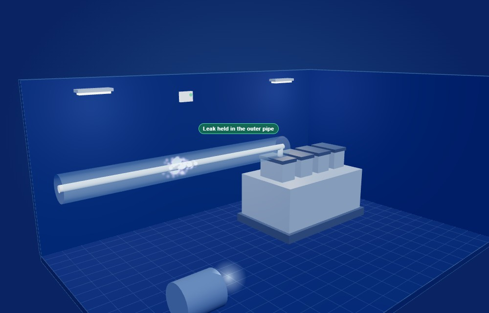
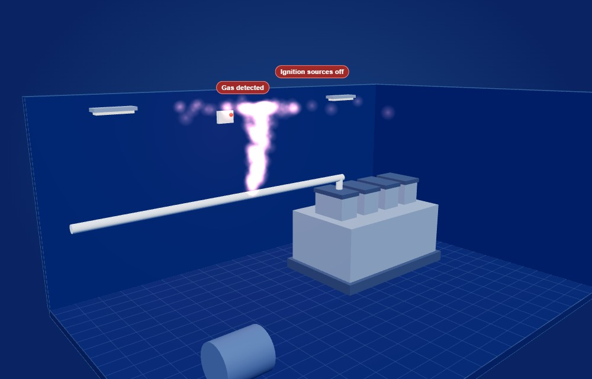

Module 1 · Gas as fuel
Some ships burn gas as fuel.
In this module:
the fuels
the spaces
After 40 minutes you can name each space.
What does a gas leak look like?
Think of a cold morning on deck.
- A white cloud - water in the air, frozen by the cold gas.
- The gas itself is invisible - it can reach past the cloud.
Fly through the ship
- 1Fuel tankNatural gas is stored as a liquid at about -162 °C.
- 2Tank connection spaceSurrounds every pipe, valve and instrument that joins the tank.
- 3Fuel preparation roomPumps, vaporizer and heater turn the cold liquid into gas.
- 4Double-walled pipeThe gas pipe runs inside an outer pipe.
- 5Engine roomGas safe or ESD-protected.
Where the vent mast stands
- The vent mast - released gas goes up and away from the ship.
- High outlet - the gas mixes into the air above the deck.
- Air intakes and doors - where the ship breathes; gas must not reach them.
- At least 10 m from any opening - the zone round the outlet.
- Here: 15 m - the intake is outside the zone.
Two barriers
- Two ways to protect the engine room.
- Gas safe - an outer pipe holds a leak, ventilated and detected.
- ESD-protected - gas may get in; when it is detected, ignition sources shut down.
Five new spaces

3DFuel tank.
Tank connection space.
Fuel preparation room.
The tank connection space
- Around the tank's joints - every pipe, valve and instrument
- Gas-tight - a leak stays inside the space
- Ventilated all the time - at least 30 air changes an hour
- Detectors top and bottom - alarm at 20 % LEL, at 40 % LEL the gas valve closes
- Entry by permit only - atmosphere measured, a second person at the entrance
Read it on the tank
Each name points to its part. Tap a name: the tank shows it.
- Containment - the boundary of the vessel
- Liquid level - where the liquid stands
- Vapour space - the upper part, above the liquid

Recognise it on board
Look at the real ship and find the parts from the drawing.
The tanks on deck
The vent mast
The fuel preparation room
- The fuel preparation room holds the pumps, the vaporizer and the heater that turn the cold liquid into gas for the engine.
- It is a hazardous space, with its own ventilation.
- Gas detection shuts the supply down at 40 % LEL.
- Its entrance is from the open deck, never from the engine room.
- The room is kept separate so that a leak is held, ventilated and detected before it can reach a source of ignition. Every pipe that leaves it is double-walled or runs in a ventilated duct.
Three steps before bunkering
Agree the plan with the supplier
Check the safety zone is clear
Test the emergency shutdown
Three parts of the safety system
Three fuels compared
| LNG | | about -162 °C, stored as a cold liquid |
| LPG | | about -42 °C, or under pressure |
| Methanol | | a liquid at room temperature |
The colder the fuel, the more the tank must be insulated.
On board and in 3D
On board
Shows what you will see on deck.
- 01The tanks on decktwo of them, side by side
- 02Pipes on topthe lines that join each tank
- 03Above deckwhere vapour can leave
The tank in 3D
Shows the shape you will meet on board.
- 01Its real shaperound ends, standing on two saddles
- 02Cut openthe liquid inside and its level
- 03Above the liquidthe vapour space is never empty
A leak - up or down?
Predict first, then watch.
- 1Cold methaneUp, down or stays?sinks and spreads low - warms above about -110 °C, then it rises
- 2Warm natural gasUp, down or stays?rises to the deckhead
- 3PropaneUp, down or stays?sinks to the lowest place and stays there
- 4Methanol vapourUp, down or stays?stays near the spill and mixes with the air
- 5AmmoniaUp, down or stays?lighter than air - it rises
- 6HydrogenUp, down or stays?rises fastest of all
SC1
Self-check 1 - the new spaces
Self-check on your tablet now.
Your score is for you only.
Summary
- What sets the rules for gas-fuelled ships?The Code - the rules for gas-fuelled shipsTap to open
- How many new spaces?Five spaces - each with its own protectionTap to open
- Two ways to protect the engine room?Two barriers - gas safe or ESD-protectedTap to open
- What comes before bunkering?Bunkering - plan, zone, shutdown testTap to open
Next: the module check
MC
Module check - Module 1
Module check on your tablet now.
From % in air to % LEL
- 1Methane burns from 5 % in air.That is its LEL: 100 % LEL.
- 2The detector reads 1 % in air.1 ÷ 5 = 0.2
- 30.2 is 20 % LEL - the alarm.A fifth of the way to burning.
- ?Your turn: it reads 2 %.What happens?2 ÷ 5 = 0.4 - 40 % LEL: the master gas valve closes.
True or false?
If you cannot see the cloud, there is no gas.
The white cloud is water in the air, frozen by the cold. The gas spreads past it, invisible - only a detector shows where it is.
 The gas reaches hereStatic 3D
The gas reaches hereStatic 3DWhat would you do?

What do you do first?
- AGo in and find the leak.No - not without a permit, a measured atmosphere and a second person.
- BStop the bunkering and tell the bridge.Yes - stop the transfer, report, keep everyone out.
- CWait - the gas valve closes by itself at 40 %.No - the alarm is your warning; act now.
Name the parts
The fuel preparation room. Name each number.
- 1Pump
- 2Vaporizer
- 3Heater
- 4Fan - the room's own ventilation
- 5Gas detector
Numbers to remember
- -162 °CWhat is it?-162 °CLNG is stored as a liquid
- 5-15 %What is it?5-15 %methane burns in air
- 20 % LELWhat is it?20 % LELthe gas alarm
- 40 % LELWhat is it?40 % LELthe master gas valve closes
- 10 mWhat is it?10 mvent mast from any opening
- 30 / hWhat is it?30 / hair changes, tank connection space
Spot the difference


Gas safeESD-protectedStatic 3D- The gas pipeinside an outer pipea single wall
- A leakis held in the outer pipereaches the room
- Thenventilated and detecteddetected; ignition sources off
The tank connection space
- Around the tank's joints - every pipe, valve and instrument
- Gas-tight - a leak stays inside the space
- Ventilated all the time - at least 30 air changes an hour
- Detectors top and bottom - alarm at 20 % LEL, at 40 % LEL the gas valve closes
- Entry by permit only - atmosphere measured, a second person at the entrance
Gas alarm - 30 seconds
The detector alarms. You are at the bunkering station.
Say your first three actions - out loud, now.
- 1Stop the transfer
- 2Tell the bridge
- 3Keep everyone out
Quick fire - 6 seconds each
LNG is stored at
-162 °CThe gas alarm sounds at
20 % LELThe master gas valve closes at
40 % LELThe vent mast stands from any opening at least
10 mAir changes an hour, tank connection space
30
Find it - 20 seconds
Point to the vent mast.
Now the engine room.